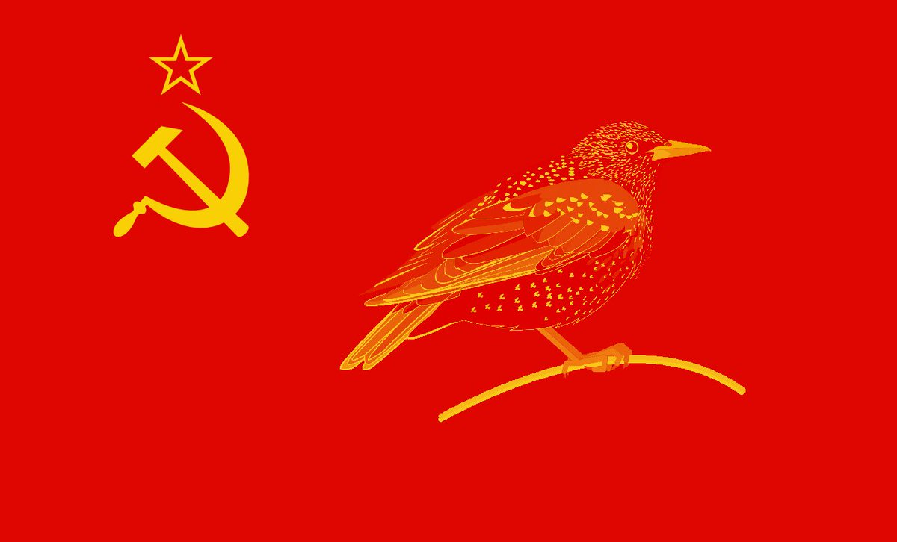

Throughout the Soviet Union, approximately 25 million nestboxes were constructed in an effort to encourage European starlings to breed and consume insect pests [Craig and Feare].
Assuming that all or most of these boxes were inhabited, and each box contained somewhere between 2-5 birds (including nestlings), we have a starling population to the tune of 50,000,000 - 125,000,000 just in these state provided nests alone. For comparison, in 1979 the RSFSR (Russian Soviet Federative Socialist Republic) had a population of approximately 137,551,000 people.
The numbers above bring up serious questions: was there a battle of Starlingrad? Could these birds have formed their own Soviet republic? Would their flag have looked like this?
Imagine a murmuration of starlings taking to the fields, chirping «За Родину!» in starling-tongue.